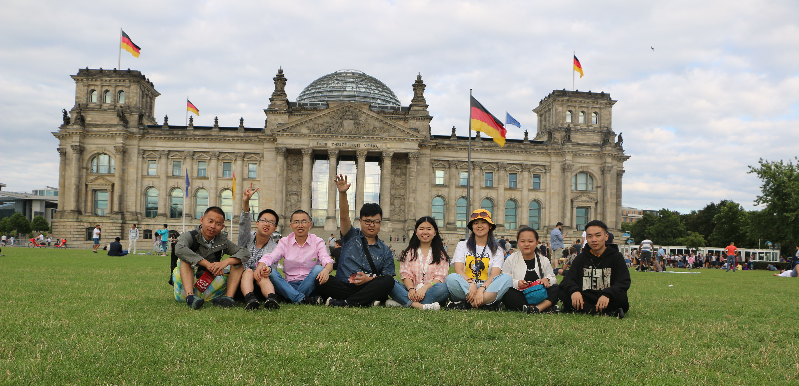
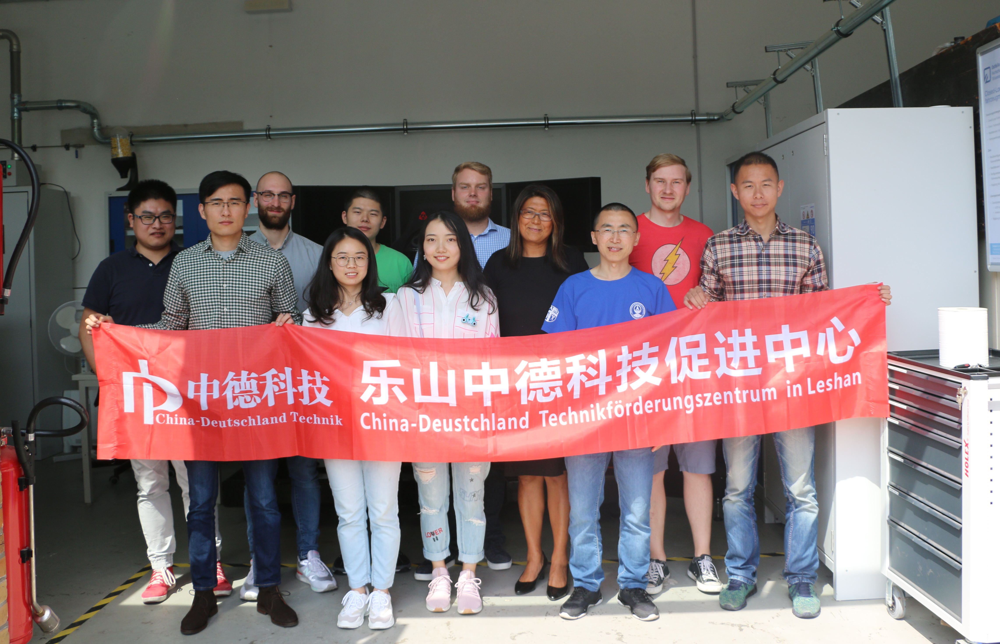

游学访问
您知道吗？著有闻名全世界的《浮士德》的著名诗人歌德是德国人；建立相对论“大厦”的著名科学家爱因斯坦也是德国人；而闻名于世的天才音乐家莫扎特也是德国人哦！而德国也是全世界公认的音乐天堂，基本上所有的德国人都会一门乐器；德国人也热爱运动，尤其是足球，在酒馆里您都能看到很多德国人在为他们所喜爱的球队呐喊助威。除此之外，德国也是艺术、文学的天堂，在那里可以尽情地徜徉在艺术和文学的海洋里。

是不是很动心呢？
本中心为深化中德两国之间的教育合作，特地为个人/团队/企业/亲子提供德国特色游学项目。无论您是想游览德国的名胜古迹，还是想侧重语言的学习，亦或者是想参观德国企业，本中心都可以为您特别定制，定制独属于您的游学路线！
